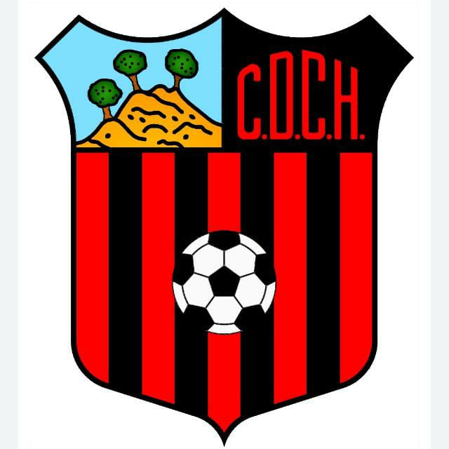

▾C.D. CORTIJILLO BAZAN
2 - 006/11/2026
C.D. TRABUCO
06/11/2026
⚽ 4' Palomo Ruiz, J.
⚽ 72' Carnero Maese, P.
🟨 56' Millan Pinto, D.
🟨 70' Luque Sanz, A.
⚽ 72' Carnero Maese, P.
🟨 56' Millan Pinto, D.
🟨 70' Luque Sanz, A.
13Pulido Sanchez, I.
3Aguilar Fernandez, J.
4Carnero Maese, P.
5Castillo Doctor, A.np
7Palomo Ruiz, J.
8Castillo Martin, M.
11Alonso Vidal, D.np
14Pasion Lopez, J.
20Millan Pinto, D.
21Luque Sanz, A.np
70Nuñez Barea, F.
SUPLENTES · 1 Cortes Muñoz, A. · 6 Ruiz Ruiz, A. · 17 Ghaylan Bonejma, Y. · 18 Toro, A. · 19 Sanchez Fernandez, I. · 79 Garcia Lara, J.
13Lara Ferrer, F.
2Roman Bermudez, A.
4Garcia Carmona, P.
7Perez Jimenez, A.
8Sancho Caro, J.
11Roman Valenzuela, A.
12Campillo Arjona, D.
17Reina Arrebola, I.
26Gamez Pascual, A.
27Garcia Luque, M.
30Marmol Diaz, E.
SUPLENTES · 1 Astorga Ortigosa, J. · 5 Luque Rodriguez, J. · 19 Sancho Luque, C. · 22 Garcia Cabrera, G. · 24 Ardila Alba, A. · 47 Fernandez Wheeler, K.
▾A.D. MALAKA C.F. "A"
1 - 207/11/2026
PTO.MALAGUEÑO CDAD.JARDIN G.I. "A"
07/11/2026
⚽ 83' Garcia Heredia, M.
🟨 44' Sánchez Torres, Á.
🟨 54' Gómez Blanco, J.
🟨 69' Aguilar Espejo, H.
🟨 74' Contreras Bolaño, M.
🟨 44' Sánchez Torres, Á.
🟨 54' Gómez Blanco, J.
🟨 69' Aguilar Espejo, H.
🟨 74' Contreras Bolaño, M.
⚽ 49' Romero Rodriguez, D.
⚽ 54' Romero Rodriguez, D.
🟨 55' Gómez Blanco, J.
🟨 76' Garcia Heredia, M.
🟨 77' Carretero Salinas, M.
⚽ 54' Romero Rodriguez, D.
🟨 55' Gómez Blanco, J.
🟨 76' Garcia Heredia, M.
🟨 77' Carretero Salinas, M.
99Jerez Ortega, U.
2Soto Villarrubia, M.
4Franco Fernandez, D.
5Cervantes Torreblanca, A.
7Sanchez Zurita, M.
8Sánchez Torres, Á.
9Amores Gonzalez, A.
11Muñoz Benitez, D.
14Callejon Ocon, E.
21Ramirez Borjas, S.
23Martin Estevez, A.
SUPLENTES · 13 Garcia Reina, M. · 15 Aguilar Espejo, H. · 20 Gonzalez De La Mota Ardila, I. · 69 Garcia Heredia, M.
1Fernandez Moyano, A.
2Arroyo Aguilar, H.
5Rios Villanueva, J.
7Portillo Sanchez, J.
8Contreras Bolaño, M.
9Fernandez Ruiz, D.
16Peinado Chavez, A.
21Musa Bravo, L.
22Carretero Salinas, M.
23Reina Ramos, M.
27Akhiat El Ouajibi, A.
SUPLENTES · 3 Romero Florido, T. · 12 Lopes, M. · 20 Pico Navarro, R. · 24 Congo Barchue, J. · 28 Pinetta Larra, M. · 29 Romero Rodriguez, D. · 99 Fernandez Hidalgo, H.
▾
C.D. CHURRIANA
4 - 107/11/2026
CLUB POLIDEPORTIVO MIJAS LAS LAGUNAS "B"

C.D. CHURRIANA07/11/2026
⚽ 9' Camacho Espinar, J. (p.)
⚽ 22' Victoria Herrera, J.
⚽ 48' Camacho Espinar, J.
⚽ 77' Espinosa Martinez, P.
🟨 70' Estepa Cabrera, S.
⚽ 22' Victoria Herrera, J.
⚽ 48' Camacho Espinar, J.
⚽ 77' Espinosa Martinez, P.
🟨 70' Estepa Cabrera, S.
⚽ 67' Tantoun Azzouadi, O.
🟨 87' Rey Flores, C.
🟨 89' Vidal Gómez, J.
🟨 87' Rey Flores, C.
🟨 89' Vidal Gómez, J.
1Perez Vadillo, V.
2Sierra Navas, A.
3Ramirez Berrio, J.
4Soto Perez, S.
5Mesa Navarro, H.
6Espinosa Martinez, P.np
7Cabello Garcia, S.
8Rodriguez Cabrera, M.
9Camacho Espinar, J.
10Estepa Cabrera, S.
11Victoria Herrera, J.
SUPLENTES · 13 Bermudez Camacho, J. · 12 Espinosa Martinez, G. · 14 Retamero Perez, R. · 16 Rios Bueno, J. · 17 El Khamlichi Nejdoubi, R. · 18 Sierra Navas, J. · 19 Navarro Morales, J.
1Gililow, A.
2Del Vecchio Tilli, V.
3Carvajal Herrera, E.
4Rey Flores, C.
5Vidal Gómez, J.
6Zaragoza Ruiz, J.
7Perez Espinosa, A.
8Tantoun Azzouadi, O.
9Platero Rodriguez, C.
10Gomez Benavides, Y.
11Tovar Rojas, J.
SUPLENTES · 13 Torres Sedeño, M. · 12 Campos Martin, G. · 14 Alonso Manzano, A. · 15 Valle Pigni, D.
▾LA CALA C.D. "A"
2 - 107/11/2026
ATLETICO JUVAL
07/11/2026
⚽ 1' Guerrero Ruiz, J.
⚽ 51' Perez Peñafiel, S. (p.)
⚽ 51' Perez Peñafiel, S. (p.)
⚽ 65' Cortes Fernandez, F. (p.)
🟨 34' De La Torre Gonzalez, F.
🟨 51' Pelaez Mogrovejo, T.
🟨 54' Parra Ruiz, H.
🟨 61' Fernandez Martinez, D.
🟨 34' De La Torre Gonzalez, F.
🟨 51' Pelaez Mogrovejo, T.
🟨 54' Parra Ruiz, H.
🟨 61' Fernandez Martinez, D.
13Capitan Conejo, A.
5Torres Gil, C.
8Garcia Fernandez, S.
11Ponferrada Berrocal, S.
15Burgos Carmona, F.np
17Guerrero Ruiz, J.
20De La Torre Gonzalez, F.
21Barba Barba, F.
22Cabral Gimenez, B.
23Buhaychuk Lavrynyuk, M.
24Martin Portillo, A.
SUPLENTES · 1 Serrano Tome, C. · 2 Carretero Prieto, J. · 4 Muñoz Montañez, M. · 9 Perez Peñafiel, S. · 10 Ruiz Garcia, I. · 19 Martin Gonzalez, I. · 29 Esposito, C.
1Campos Lopez, A.
2Kononov, A.
3Guerrero Martinez, M.
4Cevallos Yaguachi, F.
7Perez Badia, J.
8Karlsson Cantador, M.
9Khadri, B.
11Parra Ruiz, H.np
23Mihas Fedorovych, M.
80Pelaez Mogrovejo, T.
87Diaz Rua, A.
SUPLENTES · 6 Ortega Peña, G. · 10 Cortes Fernandez, F. · 19 Sánchez Bernier, I. · 21 Pedrosa Villasana, A. · 22 Cabrera Suarez, M. · 29 El Mohammadi Hafaf, A. · 44 Laamarti Jimenez, A.
▾EF DE VELEZ FRANCISCO CASTEJON
5 - 107/11/2026
C.D. ATHLETIC PUERTA BLANCA "A"
07/11/2026
⚽ 16' Gonzalez Mata, D.
⚽ 39' Garcia Rodriguez, H.
⚽ 63' Baena Lebron, S.
⚽ 67' Luque Prieto, R.
⚽ 87' Portillo Garcia, F.
🟨 67' Luque Prieto, R.
🟨 69' Diaz Jimenez, F.
🟨 82' Bermudez Zaluskiy, J.
⚽ 39' Garcia Rodriguez, H.
⚽ 63' Baena Lebron, S.
⚽ 67' Luque Prieto, R.
⚽ 87' Portillo Garcia, F.
🟨 67' Luque Prieto, R.
🟨 69' Diaz Jimenez, F.
🟨 82' Bermudez Zaluskiy, J.
⚽ 29' Osifo Osifo, M.
🟨 67' Guerrero Conejo, A.
🟨 67' Guerrero Conejo, A.
33De Miguel Bentil, L.
2Nicola Diaz, A.
3Bermudez Zaluskiy, J.
4Dominguez Jimenez, R.
6Morales Nuñez, E.
8Gonzalez Mata, D.
10Baena Lebron, S.
17Tome Fernandez, J.
21Gutierrez Gallar, I.
34Mejias Moore, T.
94Chacon Pendon, D.
SUPLENTES · 1 Portillo Garcia, F. · 14 Gallego Granados, I. · 23 Garcia Rodriguez, H. · 26 Arias Ramos, O. · 47 Diaz Jimenez, F. · 52 Chacon Pendon, M. · 88 Luque Prieto, R.
13Moreno Caturla, M.
4Guerrero Conejo, A.
6Carrasco Carballo, R.
7Corrales Ruiz, F.
8Gutierrez Jerez, H.
10Florido Bonilla, I.
14Díaz Rosa, J.
17Zhang, D.
18Cano Manjón, R.
19Caceres Sosa, A.
22Gonzalez Faura, R.
SUPLENTES · 1 Arroyo Delgado, R. · 12 Aragón Montero, A. · 15 Osifo Osifo, M. · 16 Sánchez Bravo, S.
▾CD UD DOS HERMANAS SAN ANDRES "B"
1 - 307/11/2026
C.D. CONEJITO DE MALAGA
07/11/2026
⚽ 51' Hernando Ortega, A.
🟨 35' Garcia Podadera, D.
🟨 35' Garcia Podadera, D.
⚽ 49' Perez Bazaga, A.
⚽ 82' Perez Bazaga, A.
⚽ 84' Perez Bazaga, A.
🟨 35' Olalla Hidalgo, S.
🟨 58' Martin Torres, M.
🟨 60' Linero Joven, G.
🟨 70' Barcia Del Marmol, J.
⚽ 82' Perez Bazaga, A.
⚽ 84' Perez Bazaga, A.
🟨 35' Olalla Hidalgo, S.
🟨 58' Martin Torres, M.
🟨 60' Linero Joven, G.
🟨 70' Barcia Del Marmol, J.
1Fofana Silva, I.
4Fuentes Wilt, N.
6Bermudez Perez, A.
10Correa Gonzalez, B.
12Andreu Becerra, A.
16Hernando Ortega, A.
18Hernandez Gonzalez, D.
21Murillo Erazo, J.
22Garcia Podadera, D.
27Nascimento Veloso, D.
30Mérida Rodriguez, A.
SUPLENTES · 13 Vazquez Iglesias, E. · 5 Luque Bautista, C. · 11 Zapata Quiles, I. · 14 Manzambi, I. · 20 Sánchez Arjona, D. · 29 Pinta Marin, M. · 69 Ramos Sanz, H.
1Lara Vazquez, C.
3Mota Rodriguez, A.
4Barcia Del Marmol, J.np
5Acedo Pino, A.np
6Martin Torres, M.
7Morales Illanes, C.np
10Linero Joven, G.np
11Olalla Hidalgo, S.
14Cobo Rodriguez, J.
23Peralta Avella, S.np
77Redko, A.
SUPLENTES · 13 Delgado Garrido, D. · 8 Caro Mota, F. · 9 Perez Bazaga, A. · 12 Aguilera Perez, M. · 17 Ocaña Gallego, J. · 22 Hidalgo Martinez, H. · 69 Garcia Gutierrez, M.
C.D. 26 DE FEBRERO
3 - 2
08/11/2026
SECCIÓN DEPORTIVA FUNDACIÓN MCF
U.D. LOS PRADOS "A"
08/11/202617:30
C.D. FUTBOL ROMERAL